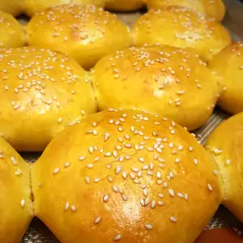

Sweet Potato Buns

Description
Not only does adding sweet potatoes to a burger bun make it more nutritious, delicious, and significantly more beautiful, but it also presents the perfect opportunity to get past your flour-amount phobia, and finally be able to make dough by feel. These are the perfect taste, texture, and appearance for a hamburger bun.
Ingredients
- ½ pound sweet potatoes, peeled and cubed
- ½ cup all-purpose flour
- ½ cup warm water
- 1 (.25 ounce) package dry active yeast (such as Fleischmann's® RapidRise Yeast)
- 3 tablespoons melted butter
- 2 teaspoons honey
- 1 ¼ teaspoons fine sea salt
- 3 ¼ cups all-purpose flour, or more as needed
- 1 teaspoon water
- 1 tablespoon sesame seeds, or to taste
- 1 large egg
Steps
- Place sweet potatoes into a large pot and cover with salted water; bring to a boil. Reduce heat to medium-low and simmer until very tender, 15 to 20 minutes. Drain well. Mash sweet potatoes with a potato masher. Measure out 1 cup and allow to cool to room temperature. Refrigerate remaining mashed sweet potatoes for another use.
- Whisk 1/2 cup flour, 1/2 cup warm water, and yeast together in a bowl. Cover and and place in a warm place to allow yeast to activate, about 15 minutes.
- Spoon 1 cup of cooled mashed sweet potatoes into yeast mixture and transfer to the bowl of a stand mixer. Add egg, melted butter, honey, and sea salt and about 3 cups flour. Mix using the dough hook. Knead for 2 to 3 minutes. If dough seems too sticky, gradually add in remaining flour or as needed to where dough pulls away from the sides of the mixing bowl. Continue kneading until dough is very soft, only slightly sticky, and somewhat elastic, about 2 minutes.
- Transfer dough to a floured surface. Shape into smooth ball. Return dough to bowl and drizzle with oil; rub oil over entire surface to prevent dough from drying out. Cover and place in a warm spot until dough has doubled in size, about 2 hours.
- Turn dough out onto a lightly floured surface. Gently press out air pockets. If needed, use only enough flour to keep dough from sticking. Press into rectangular shape about 3/4-inch thick. Cut dough into 16 equal sized pieces. Gently shape each piece into a ball. Slightly flatten each ball and place onto a rimmed baking sheet lined with a silicone baking mat. Let rise until double, about 45 minutes.
- Preheat oven to 400 degrees F (200 degrees C).
- Whisk 1 egg and 1 teaspoon water together in a bowl. Brush each bun with egg mixture. Sprinkle dough with sesame seeds.
- Bake in the preheated oven until browned, about 15 minutes.